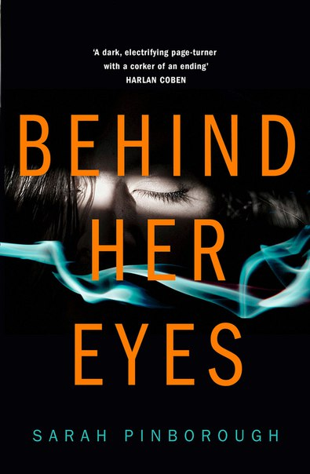
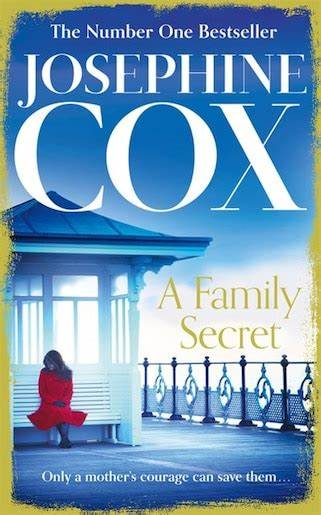
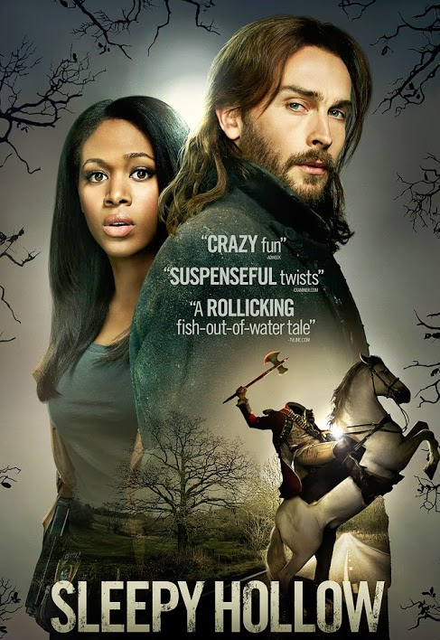
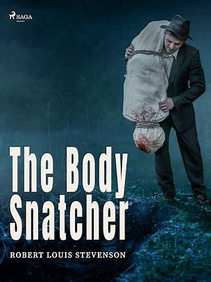
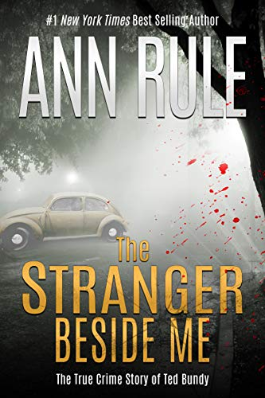
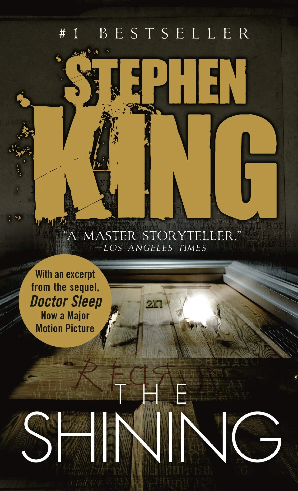

| Fantasy |

We Hunt the Fame
War is brewing, and the Arz sweeps closer with each passing day, engulfing the land in shadow. When Zafira embarks on a quest to uncover a lost artifact that can restore magic to her suffering world and stop the Arz, Nasir is sent by the king on a similar mission: retrieve the artifact and kill the Hunter. But an ancient evil stirs as their journey unfolds—and the prize they seek may pose a threat greater than either can imagine.
Read Full Story |

The Arabian Nights
Scorned by an unfaithful wife, Shahryar is the king of a great empire, but is brokenhearted. Shahryar chose to marry a new woman every day only to kill her the next morning.
Read Full Story |

The Time Machine
Hoping to alter the events of the past, a 19th century inventor and scientist, Alexander Hartdegen, instead travels 800, 000 years into the future, where he finds humankind divided into two warring races: the childlike Eloi and the monstrous Morlocks. His machine disappears, so he explores this dystopian vision of humanity's future.
Read Full Story |

Shadow and Bone
Alina Starkov has never been good at anything. But when her regiment is attacked on the Fold and her best friend is brutally injured, Alina reveals a dormant power that saves his life—a power that could be the key to setting her war-ravaged country free. Wrenched from everything she knows, Alina is whisked away to the royal court to be trained as a member of the Grisha, the magical elite led by the mysterious Darkling.
Read Full Story |
| Thriller |

Behind Her Eyes
David and Adele seem like the ideal pair. He's a successful psychiatrist, she is his picture-perfect wife who adores him. But why is he so controlling? And why is she keeping things hidden? As Louise, David's new secretary, is drawn into their world, she uncovers more puzzling questions than answers. The only thing that is crystal clear is that something in this marriage is very, very wrong. But Louise can't guess how wrong – and how far someone might go to protect their marriage's secrets. |

A Family Secret
Although she's surrounded by a loving family, Marie feels lost: living with a lie can be very lonely. Marie has been carrying a secret for years, one that could ruin the lives of those she loves most, and the guilt she feels weighs heavily. Her granddaughter, Cathy, is a most cheerful young woman, and in the first flush of love. The secret Marie is about to tell her will not only change her future but rewrite her past. Cathy now has a dangerous choice to make that could change her life forever. |

Missing Presumed
Mid-December, and Cambridgeshire is blanketed with snow. Detective Sergeant Manon Bradshaw tries to sleep after yet another soul-destroying Internet date – the low murmuring of her police radio her only solace. Over the airwaves come reports of a missing woman – door ajar, keys and phone left behind, a spatter of blood on the kitchen floor. Manon knows the first 72 hours are critical: you find her, or you look for a body.
Read Full Story |

The Accident
Sue Jackson has the perfect family but when her teenage daughter Charlotte deliberately steps in front of a bus and ends up in a coma she is forced to face a very dark reality. Retracing her daughter’s steps she finds a horrifying entry in Charlotte’s diary and is forced to head deep into Charlotte’s private world. In her hunt for evidence, Sue begins to mistrust everyone close to her daughter and she’s forced to look further, into the depths of her own past. Sue will do anything to protect her daughter. But what if she is the reason that Charlotte is in danger?
Read Full Story |
| Horror |

The Legend of Sleepy Hollow
Ichabod Crane, a schoolteacher, came to Tarry Town in the glen of Sleepy Hollow to ply his trade in educating young minds. He was a gullible and excitable fellow, often so terrified by locals' stories of ghosts that he would hurry through the woods on his way home, singing to keep from hysterics. Until late one night, he finds that maybe they're not just stories. What is that dark, menacing figure riding behind him on a horse? And what does it have in its hands? And why wasn't schoolteacher Crane ever seen in Sleepy Hollow again? |

The Body Snatcher
Medical school students Fettes and Macfarlane are charged with the unenviable task of receiving and paying for the institution’s research cadavers. When Fettes recognizes the dead body of a woman he saw alive and well just the day before, he suspects murder. Macfarlane, however, insists that the authorities would never believe they had nothing to do with her death. Reluctantly, Fettes agrees to keep quiet, but soon regrets his decision when another familiar corpse turns up—and takes on a life of its own. |

The Stranger Beside Me
With a slow chill that intensifies with each heart-pounding page, Rule describes her dawning awareness that Ted Bundy, her sensitive coworker on a crisis hotline, was one of the most prolific serial killers in America. |

The Shining
Jack Torrance's new job at the Overlook Hotel is the perfect chance for a fresh start. As the off-season caretaker at the atmospheric old hotel, he'll have plenty of time to spend reconnecting with his family and working on his writing. But as the harsh winter weather sets in, the idyllic location feels ever more remote...and more sinister. And the only one to notice the strange and terrible forces gathering around the Overlook is Danny Torrance, a uniquely gifted five-year-old. |